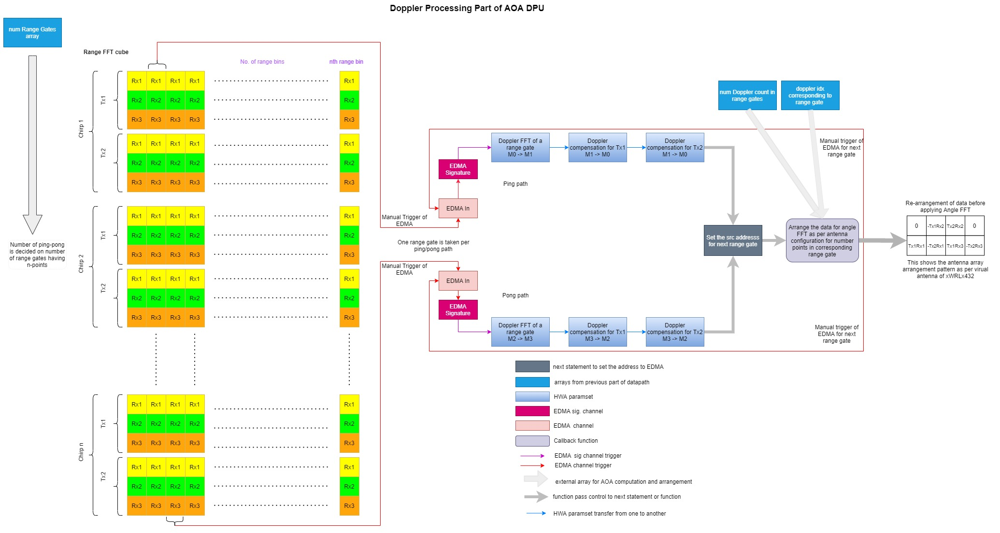

The AoAproc or Angle of Arrival processing does the 3rd dimension FFT after Doppler FFT in the frame idle time which translates to angle measurements.
Introduction
The Angle of Arrival processing DPU does the 3rd dimension FFT after Doppler FFT in the frame idle time. This AoA implementation recalculates the Doppler for the detected points with doppler phase compensation (if 2-Tx is used), arranges the virtual antenna config as required, calculates elevation-azimuth FFT and finally stores the elevation-azimuth indices for further chain processing.
Block Diagram
The top-level diagram of the AoA DPU is shown below:

AoA processing DPU top-level diagram
AoA DPU functioning
The Figure below elaborates on the Doppler processing part of AOA DPU. Based on which all of the range gates have n-points as calculated from detection matrix, we apply Doppler processing and Doppler compensation (if num of Tx used is > 1). Then move to the Doppler index in the range gate and arrange the antenna as per antenna geometry of the device before applying angle FFT. This step of arranging data prior to angle-FFT is done for all detected points in the corresponding range gate. Note that to go to the next range gate, we will need to correspondingly set the source address of EDMA to pick up the next range gate of interest. Also, note that only one range gate is brought in per EDMA transfer in ping/pong path; unlike Doppler DPU where two range gates are taken in ping/pong path. The 3-paramsets used in the ping/pong path does the following operation:
- Doppler FFT for range gate.
- Doppler compensation for Tx1 (taken in as such as phase compensation need not be applied here)
- Doppler compensation for Tx2 (use vector multiplication feature of HWA) to achieve this

AoA processing (Doppler Calculation) DPU detailed diagram
Figure below illustrates the angle estimation portion of the DPU. For each of the n detected points, the azimuth elevation FFT is computed, followed by the index of the bin with the maximum magnitude in the azimuth-elevation heatmap (Max-Abs operation). This will be used for estimating elevation-azimuth indices to be subsequently used in feature extraction. As shown in the diagram, each ping/pong path processes one of the detected points. The EDMA output is the index corresponding to the max-value of azimuth-elevation heatmap. The 3-paramsets used in the ping/pong path perform the following operations:
- Azimuth FFT
- Elevation FFT
- Max of absolute value from azimuth-elevation heatmap

AoA processing (Angle Calculation) DPU detailed diagram
Usage Overview
API
To exercise the DPU functionalities, the application shall call the following APIs in sequence
Example Usage
Include the below file to access the APIs
DPU Initialization Example
void aoaProcDpuTest_dpuInit()
{
int32_t errorCode = 0;
if (aoaProcDpuHandle == NULL)
{
DebugP_log (
"Debug: AoA Proc DPU initialization returned error %d\n", errorCode);
return;
}
}
DPU Configuration Parsing Example
params->numTxAntennas = testConfig->numTxAntennas;
params->numRxAntennas = testConfig->numRxAntennas;
params->numVirtualAntennas = testConfig->numTxAntennas * testConfig->numRxAntennas;
params->numRangeBins = testConfig->numRangeBins;
params->numDopplerChirps = testConfig->numDopplerChirps;
params->log2NumDopplerBins = HWAFFT_log2Approx(params->numDopplerChirps);
params->numDopplerBins = pow(2,params->log2NumDopplerBins);
params->doppFFT_is16b = 0;
params->elevationFFTSize = 32;
params->azimuthFFTSize = 32;
params->log2NumElevationBins = HWAFFT_log2Approx(params->elevationFFTSize);
params->log2NumAzimuthBins = HWAFFT_log2Approx(params->azimuthFFTSize);
pHwConfig->hwaCfg.windowSize = sizeof(uint32_t) * ((params->numDopplerBins + 1) / 2);
pHwConfig->hwaCfg.vectorRamSize = sizeof(cmplx32ImRe_t)*params->numDopplerBins;
pHwConfig->radar_1D_FFT_Cube.dataSize = testConfig->numRangeBins * testConfig->numTxAntennas * testConfig->numRxAntennas * sizeof(cmplx16ReIm_t) * params->numDopplerChirps;
detMatrix_res->antenna_array_elements = NUM_AZIMUTH_ELEMENTS*NUM_ELEVATION_ELEMENTS;
detMatrix_res->max_num_points = MAX_NUM_POINTS;
params->numCols_Antenna = NUM_AZIMUTH_ELEMENTS;
params->numRows_Antenna = NUM_ELEVATION_ELEMENTS;
pHwConfig->edmaCfg.edmaIn_rangeFFT.ping.channel = DPC_OBJDET_DPU_AOAPROC_EDMAIN_DOPPLER_CH_PING;
pHwConfig->edmaCfg.edmaIn_rangeFFT.pong.channel = DPC_OBJDET_DPU_AOAPROC_EDMAIN_DOPPLER_CH_PONG;
pHwConfig->edmaCfg.edmaIn_rangeFFT.ping.channelShadow = DPC_OBJDET_DPU_AOAPROC_EDMAIN_DOPPLER_SHADOW_PING;
pHwConfig->edmaCfg.edmaIn_rangeFFT.pong.channelShadow = DPC_OBJDET_DPU_AOAPROC_EDMAIN_DOPPLER_SHADOW_PONG;
pHwConfig->edmaCfg.edmaIn_rangeFFT.ping.eventQueue = DPC_OBJDET_DPU_AOAPROC_EDMAIN_DOPPLER_EVENT_QUE_PING;
pHwConfig->edmaCfg.edmaIn_rangeFFT.pong.eventQueue = DPC_OBJDET_DPU_AOAPROC_EDMAIN_DOPPLER_EVENT_QUE_PONG;
pHwConfig->edmaCfg.edmaHotSigDoppler.ping.channel = DPC_OBJDET_DPU_AOAPROC_EDMAIN_DOPPLER_SIG_CH_PING;
pHwConfig->edmaCfg.edmaHotSigDoppler.pong.channel = DPC_OBJDET_DPU_AOAPROC_EDMAIN_DOPPLER_SIG_CH_PONG;
pHwConfig->edmaCfg.edmaHotSigDoppler.ping.channelShadow = DPC_OBJDET_DPU_AOAPROC_EDMAIN_DOPPLER_SIG_SHADOW_PING;
pHwConfig->edmaCfg.edmaHotSigDoppler.pong.channelShadow = DPC_OBJDET_DPU_AOAPROC_EDMAIN_DOPPLER_SIG_SHADOW_PONG;
pHwConfig->edmaCfg.edmaHotSigDoppler.ping.eventQueue = DPC_OBJDET_DPU_AOAPROC_EDMAIN_DOPPLER_SIG_EVENT_QUE_PING;
pHwConfig->edmaCfg.edmaHotSigDoppler.pong.eventQueue = DPC_OBJDET_DPU_AOAPROC_EDMAIN_DOPPLER_SIG_EVENT_QUE_PING;
pHwConfig->edmaCfg.edmaIn_dopplerFFT.ping.channel = DPC_OBJDET_DPU_AOAPROC_EDMAIN_AOA_CH_PING;
pHwConfig->edmaCfg.edmaIn_dopplerFFT.pong.channel = DPC_OBJDET_DPU_AOAPROC_EDMAIN_AOA_CH_PONG;
pHwConfig->edmaCfg.edmaIn_dopplerFFT.ping.channelShadow = DPC_OBJDET_DPU_AOAPROC_EDMAIN_AOA_SHADOW_PING;
pHwConfig->edmaCfg.edmaIn_dopplerFFT.pong.channelShadow = DPC_OBJDET_DPU_AOAPROC_EDMAIN_AOA_SHADOW_PONG;
pHwConfig->edmaCfg.edmaIn_dopplerFFT.ping.eventQueue = DPC_OBJDET_DPU_AOAPROC_EDMAIN_AOA_EVENT_QUE_PING;
pHwConfig->edmaCfg.edmaIn_dopplerFFT.pong.eventQueue = DPC_OBJDET_DPU_AOAPROC_EDMAIN_AOA_EVENT_QUE_PONG;
pHwConfig->edmaCfg.edmaHotSigAoA.ping.channel = DPC_OBJDET_DPU_AOAPROC_EDMAIN_AOA_SIG_CH_PING;
pHwConfig->edmaCfg.edmaHotSigAoA.pong.channel = DPC_OBJDET_DPU_AOAPROC_EDMAIN_AOA_SIG_CH_PONG;
pHwConfig->edmaCfg.edmaHotSigAoA.ping.channelShadow = DPC_OBJDET_DPU_AOAPROC_EDMAIN_AOA_SIG_SHADOW_PING;
pHwConfig->edmaCfg.edmaHotSigAoA.pong.channelShadow = DPC_OBJDET_DPU_AOAPROC_EDMAIN_AOA_SIG_SHADOW_PONG;
pHwConfig->edmaCfg.edmaHotSigAoA.ping.eventQueue = DPC_OBJDET_DPU_AOAPROC_EDMAIN_AOA_SIG_EVENT_QUE_PING;
pHwConfig->edmaCfg.edmaHotSigAoA.pong.eventQueue = DPC_OBJDET_DPU_AOAPROC_EDMAIN_AOA_SIG_EVENT_QUE_PING;
pHwConfig->intrObj = &intrObj;
pHwConfig->edmaCfg.edmaOut_maxAoA.ping.channel = DPC_OBJDET_DPU_AOAPROC_EDMAOUT_MAXAOA_PING_CH;
pHwConfig->edmaCfg.edmaOut_maxAoA.pong.channel = DPC_OBJDET_DPU_AOAPROC_EDMAOUT_MAXAOA_PONG_CH;
pHwConfig->edmaCfg.edmaOut_maxAoA.ping.channelShadow = DPC_OBJDET_DPU_AOAPROC_EDMAOUT_MAXAOA_PING_SHADOW;
pHwConfig->edmaCfg.edmaOut_maxAoA.pong.channelShadow = DPC_OBJDET_DPU_AOAPROC_EDMAOUT_MAXAOA_PONG_SHADOW;
pHwConfig->edmaCfg.edmaOut_maxAoA.ping.eventQueue = DPC_OBJDET_DPU_AOAPROC_EDMAOUT_MAXAOA_PING_EVENT_QUE;
pHwConfig->edmaCfg.edmaOut_maxAoA.pong.eventQueue = DPC_OBJDET_DPU_AOAPROC_EDMAOUT_MAXAOA_PONG_EVENT_QUE;
pHwConfig->hwaCfg.paramSetStartIdx = 0;
pHwConfig->hwaCfg.winRamOffset = DPC_OBJDET_HWA_WINDOW_RAM_OFFSET;
pHwConfig->hwaCfg.winSym = 1;
pHwConfig->hwaCfg.vecRamOffset = DPC_OBJDET_HWA_WINDOW_RAM_OFFSET;
pHwConfig->hwaCfg.hwaDmaTriggerDoppPing = 0;
pHwConfig->hwaCfg.hwaDmaTriggerDoppPong = 1;
pHwConfig->hwaCfg.hwaDmaTriggerAoAPing = 2;
pHwConfig->hwaCfg.hwaDmaTriggerAoAPong = 3;
pHwConfig->edmaCfg.edmaHandle = gEdmaHandle[0];
aoaProcDpuCfg.hwRes.hwaCfg.window = (int32_t *)&window2DCoef[0];
aoaProcDpuCfg.hwRes.hwaCfg.vectorRam = (cmplx32ImRe_t *)&vectMult[0];
aoaProcDpuCfg.hwRes.radar_1D_FFT_Cube.data = (void *)rangeFFT;
aoaProcDpuCfg.hwRes.angleMat.data = (void *)angleMatrix;
aoaProcDpuCfg.hwRes.maxVal_elev_azim = (uint32_t *)&maxaoa_index[0];
aoaProcDpuCfg.maxDetmatrix_res.rangeGatesCount = (uint16_t *)&rangeGatesCount[0];
aoaProcDpuCfg.maxDetmatrix_res.range_idx_arr = (uint16_t *)&rangeIndexArray[0];
aoaProcDpuCfg.maxDetmatrix_res.angle_idx_doppler_count_arr = (uint16_t *)&angleIndexDopplerCnt[0];
aoaProcDpuCfg.maxDetmatrix_res.doppler_idx_arr = (int16_t *)&dopplerIndexArray[0];
aoaProcDpuCfg.maxDetmatrix_res.antenna_array = (cmplx32ImRe_t *)&antenna_array[0];
DPU Configuration Example
if(retVal < 0)
{
DebugP_log(
"DEBUG: DOPPLER DPU config return error:%d \n", retVal);
}
DPU Doppler Process Trigger Example
if(retVal < 0)
{
DebugP_log(
"DEBUG: DOPPLER DPU process return error:%d \n", retVal);
}
DPU AoA Process Trigger Example
if(retVal < 0)
{
DebugP_log(
"DEBUG: AoA DPU process return error:%d \n", retVal);
}
DPU Close Example
if(retVal < 0)
{
DebugP_log(
"DEBUG: AoA DPU deinit return error:%d \n", retVal);
}
Refer to the document - Gesture_Recognition_Demo_documentation.pdf, in the SDK docs folder, for more details.
 1.8.20
1.8.20